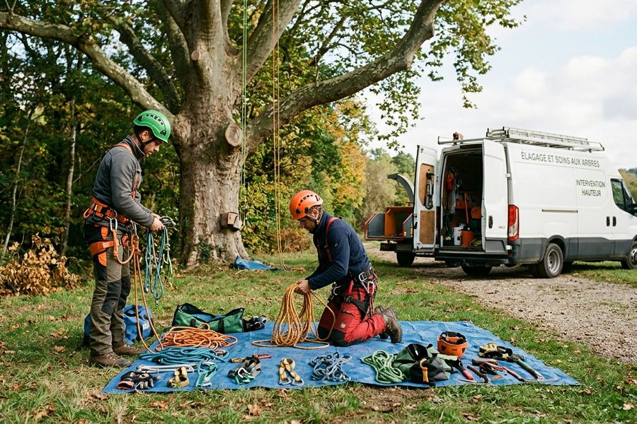
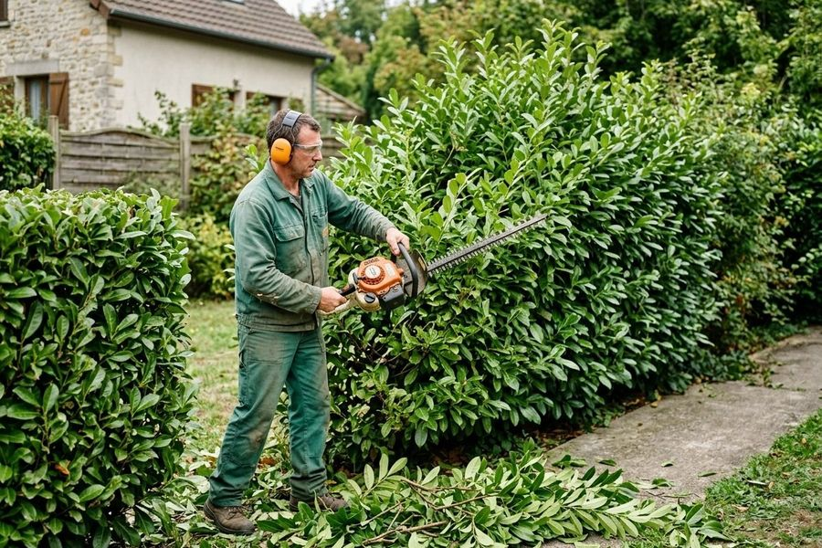

Autour de Longjumeau, dans un rayon de 15 km
Particuliers, copropriétés, associations syndicales libres ou entreprises : contrats d'entretien annuels ou prestations ponctuelles.

Des jardins de toute nature
Nous travaillons aussi bien pour des particuliers que pour des copropriétés, des associations syndicales libres ou des entreprises.
- Contrats d'entretien annuels pour un suivi régulier
- Prestations ponctuelles selon vos besoins

Une réduction d'impôts de 50 %
Barbey Paysages est agréée « Services à la personne » : vous bénéficiez d'une réduction de 50 % de vos impôts sur le montant de vos travaux de jardin.
Elle s'applique aux travaux d'entretien de jardin de votre résidence principale, dans la limite de 5 000 euros de travaux par an.

Du matériel en propriété, de plus en plus sur batterie
Barbey Paysages est propriétaire de son matériel. L'entreprise utilise de plus en plus de matériel fonctionnant sur batterie, moins bruyant et plus respectueux de l'environnement.
Votre jardin est dans notre secteur ?
Appelez-nous : nous vous dirons si nous pouvons intervenir chez vous.